01 開場：36 倍的誘惑
直播一開場，講者先丟出「為什麼這麼多人崇拜正2」的證據。他以 00631L（元大台灣50 正2，2014/10/30 成立，是台股正2 裡資料最久的）為例：
「假設十多年前投入 100 萬，到現在會滾到多少？3,670 萬，非常誇張。所以為什麼大家會很想說『問就是正二』——因為看到這個數字、這個回測圖，你拉一個線圖就會自然而然產生一種直覺。」— 直播講者
但他立刻點破這種直覺背後的思考盲點：
「這背後有一個比較危險的思考方式：我們會很容易把過去實現過的『某一條』歷史路徑，理所當然當成一種正常、自然而然會發生的結果，甚至誤以為未來也會這樣發生下去，把它當成一個未來合理的預期。」— 直播講者
02 每日重置兩倍：機械化的「追高殺低」
要理解正2，得先懂它的運作。講者強調：正2 的公開說明書寫的是提供指數「每日」兩倍報酬，所以基金必須隨時維持 總曝險 = 淨值的 2 倍。他用一張圖，帶大家算一遍每天收盤前的「重新平衡」：
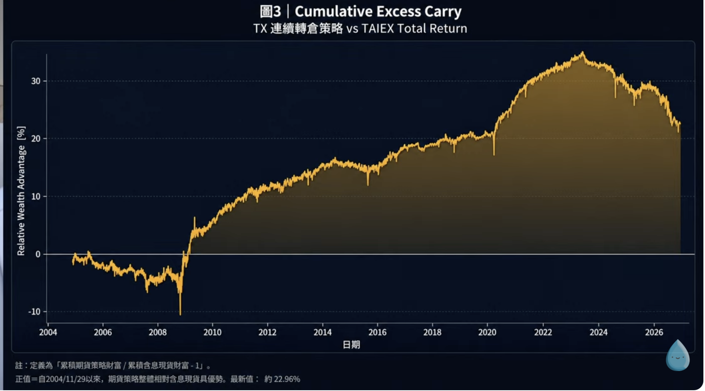
起點：淨值 100 元 → 必須持有 200 元的市場曝險（台股透過期貨、美股多用 swap 交換合約達成，不一定真的借錢買股）。
情境一：指數漲 10%
- 200 的曝險漲 10% → 220，賺 20 元，淨值 100 → 120。
- 此時實際槓桿 = 220 ÷ 120 = 1.83 倍（不足 2 倍！）。
- 為了讓「明天」繼續是 2 倍，收盤前經理人必須把曝險拉高到 120×2 = 240 → 也就是再加碼 20 元 →「上漲後加碼」。
情境二：指數跌 10%
- 200 的曝險跌 10% → 180，虧 20 元，淨值 100 → 80。
- 此時實際槓桿 = 180 ÷ 80 = 2.25 倍（超過 2 倍！）。
- 要恢復 2 倍，曝險要降到 80×2 = 160 → 也就是再減碼 20 元 →「下跌後減碼」。
「這是一種機械化的操作。不是經理人判斷市場要漲去追高，也不是他判斷要跌先砍——是這個產品為了每天維持兩倍槓桿，不得已必須執行的機械化調整。」— 直播講者
那這個「漲後加碼、跌後減碼」是好是壞？聊天室有人說這不就是「追高殺低」嗎？講者說「這句話只對一半」：
- 單邊趨勢（一路漲）：今天漲、收盤加碼 → 隔天繼續漲 → 加碼的部位帶來更多獲利 → 形成正向複利，正2 大勝。
- 反覆盤整（漲跌來回）：漲後放大部位 → 隔天遇跌（用更大曝險承受跌幅）；跌後縮小部位 → 隔天遇彈（只能用小曝險參與反彈）→ 反覆侵蝕報酬。
03 波動耗損 × 路徑相依：5 條路徑的震撼
接著是全場第一個高潮。講者設計 5 種不同的 10 天行情，每天漲跌順序都不同，但有一件事完全一樣：追蹤的原型（1 倍指數）最後都從 100 漲到 110，都是 +10%。他問：那正2 是不是應該都賺兩倍、都是 +20%？
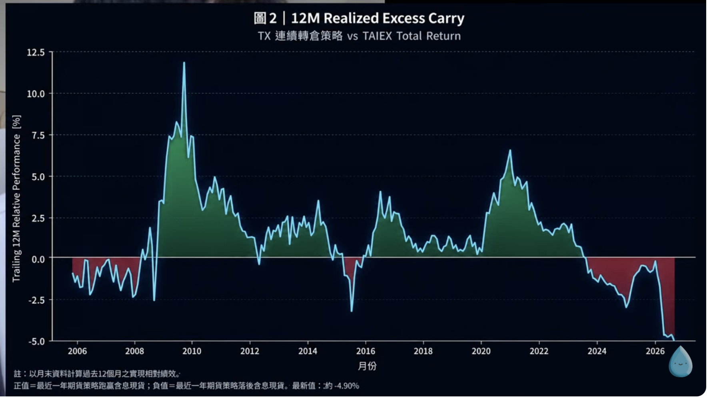
| 路徑 | 行情特徵 | 原型（1 倍） | 正2 結果 |
|---|---|---|---|
| ① | 非常平穩上漲（每天約 +0.96%） | +10% | +20.89% |
| ② | 一開始小幅震盪 | +10% | +20.6% |
| ③ | 波動再大一點 | +10% | +17.84% |
| ④ | 更劇烈震盪 | +10% | +1.47% |
| ⑤ | 每天大漲大跌（極端） | +10% | −12.15% |
同樣的起點（100）、同樣的終點（110）、原型總報酬一模一樣，正2 的結果卻從 +20.89% 一路散佈到 −12.15%。講者解釋，路徑①之所以是 +20.89%（甚至略高於 20%），是因為一路平穩上漲讓每天的兩倍報酬形成正向複利；他也給了一個參考基準：1.1² − 1 = 21%（平方基準）。而越震盪，離這個基準越遠、甚至變負。
這就是「路徑相依」
「你買原型，不用管中間怎麼走，漲 10% 就賺 10%。可是你買正2，最後賺多少，不只取決於市場最後漲多少，還取決於市場中間是怎麼走過來的。這就是學術上講的『路徑相依』。」— 直播講者
為什麼會這樣？講者點出根源：複利世界裡，正負報酬本來就不對稱——跌 50% 要漲 100% 才回本；漲 50% 只要跌 33.3% 就回原點。槓桿把每日漲跌放大，也把這個不對稱放大。
三個名詞的關係（講者小結）
| 名詞 | 是什麼 |
|---|---|
| 每日重置 | 正2 的運作機制 |
| 路徑相依 | 報酬的形成過程（中間怎麼走 → 影響結果） |
| 波動耗損 | 某些震盪路徑最後呈現出的結果（相對平方基準的拖累） |
04 學術根基：2010 年那篇 SIAM 論文
講者強調這 5 個 case 不是他隨口編的，是根據一篇非常有名的 2010 年論文設計的。
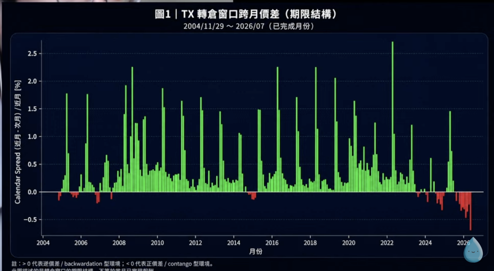
「這篇論文不是用直覺的例子，而是直接用數學公式，把槓桿 ETF 很多天的報酬拆解出來。它還用 56 檔美國的正2、正3 ETF 來驗證公式，結果跟真實績效非常吻合。它發表在數理金融領域的期刊（SIAM），不是財經頂刊，所以數學密度很強，背後用到很多維基分那些東西。過去 10 到 15 年很多講正2 的論文都會引用這篇。」— 直播講者
（按：此即 Avellaneda & Zhang 2010 年發表於 SIAM Journal on Financial Mathematics 的槓桿 ETF 路徑相依經典論文。）
05 三張歷史圖，打破三個迷思
講者接著用三張真實歷史的圖，一張一張拆解「正2 到底什麼時候贏、什麼時候輸」。
圖 A：2014–2026，波動耗損完全被蓋過
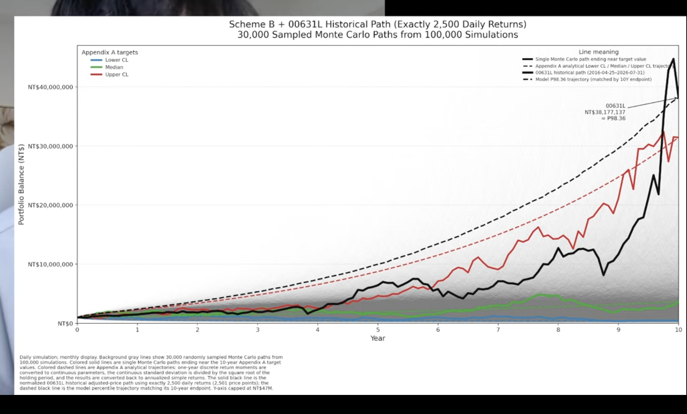
這段期間 0050 年化報酬高達 20.5%、年化波動只有 19.69%（比台股長期 22–23% 還低）。而正2 年化衝到 30.89%。
「台股這段時間非常有利於正2 形成正向複利。原型 0050 年化報酬 20% 多、波動又相對低，所以背後的波動耗損是完全蓋不掉的。」— 直播講者
圖 B：2003–2014，波動耗損較明顯，但仍蓋過
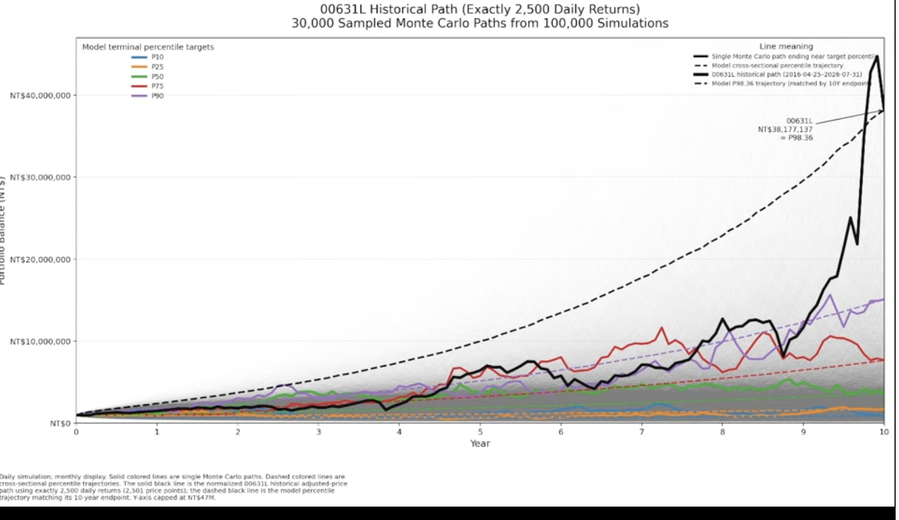
因為 00631L 在 2014 才成立，這段沒有真實 ETF，講者用 0050 的每日還原股價（含息）模擬一檔理想正2（綠線）。這段 0050 年化 8.67%、波動 21.59%。
很多人直覺會算「8.67% × 2 = 17.34%」，講者說錯——正2 放大的不是長期年化總報酬，是每天報酬的兩倍。他給了一個好用的近似公式：
＝ 2 × 8.67% − (21.59%)² ≈ 11.92%（實際模擬跑出來也差不多 12%）
→ 波動越大，那個「減掉波動平方」扣得越多。這就是波動耗損的數學來源。
結果：正2 年化 11.92%，還是贏原型 8.67%，但沒有圖 A 那麼誇張（20% → 36%）——因為報酬沒那麼高、波動較大，波動耗損較明顯。
圖 C：2003–2012「重合點」——最狠的一擊
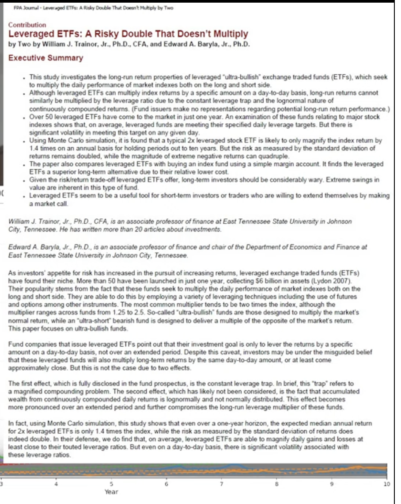
講者眼尖地指出，圖 B 裡綠線和藍線有幾個時間點是重合的。他把「最後一次重合」（2003/6/30 到 2012/6/4，約 9 年）單獨拉出來看：
| 指標 | 原型 0050 | 正2 |
|---|---|---|
| 年化報酬 | 約 6% 多 | 約 6% 多（幾乎一樣！） |
| 年化波動 | 23.44% | 46.87%（2 倍） |
| 最大跌幅 | −55.69% | −83.14% |
（講者補充：正2 最大跌幅是 −83% 而非 −110%，因為「下跌後減碼」機制讓它不會歸零，但也已經夠恐怖。）這張圖直接打破一個最常見的迷思：
「很多人有一個迷思：只要覺得市場長期向上，就該買正2。這句話其實不對。這段期間市場確實長期向上，可是正2 跟原型的年化報酬一模一樣，風險卻是兩倍。所以你要推薦一個人買正2，不能只說『市場長期向上』——這是屁話。你該講的是：市場向上的正向複利，夠不夠大到蓋掉背後的波動耗損？」— 直播講者
06 蒙地卡羅 10 萬次模擬（全場重頭戲）
前面三張都是「歷史的單一路徑」。但大家真正好奇的是未來會怎麼走。要回答未來，不能只看一條已實現的路，得模擬十萬條。進入模擬前，講者先鋪陳一個關鍵統計觀念。
6-1 為什麼「平均數會騙人」：對數常態與右偏
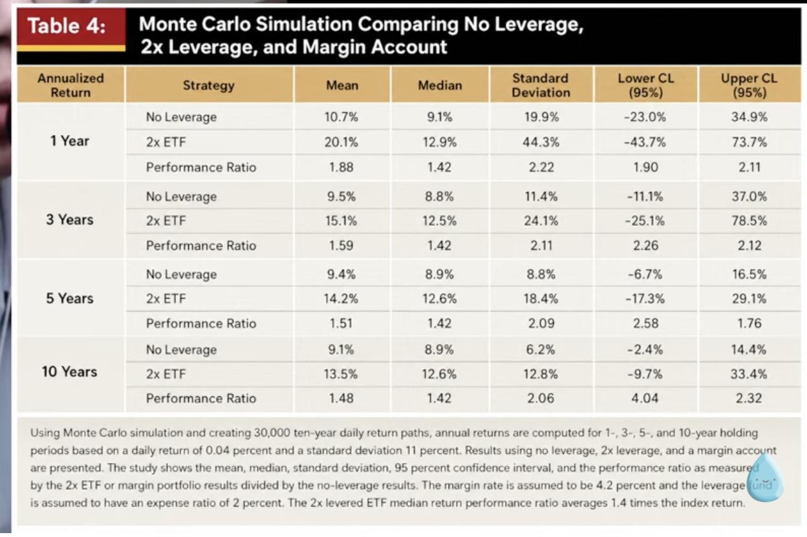
講者說：長期財富累積不是常態分布（左右對稱），而是右偏（右邊拖一條長尾）。他用一個簡單例子讓大家秒懂：
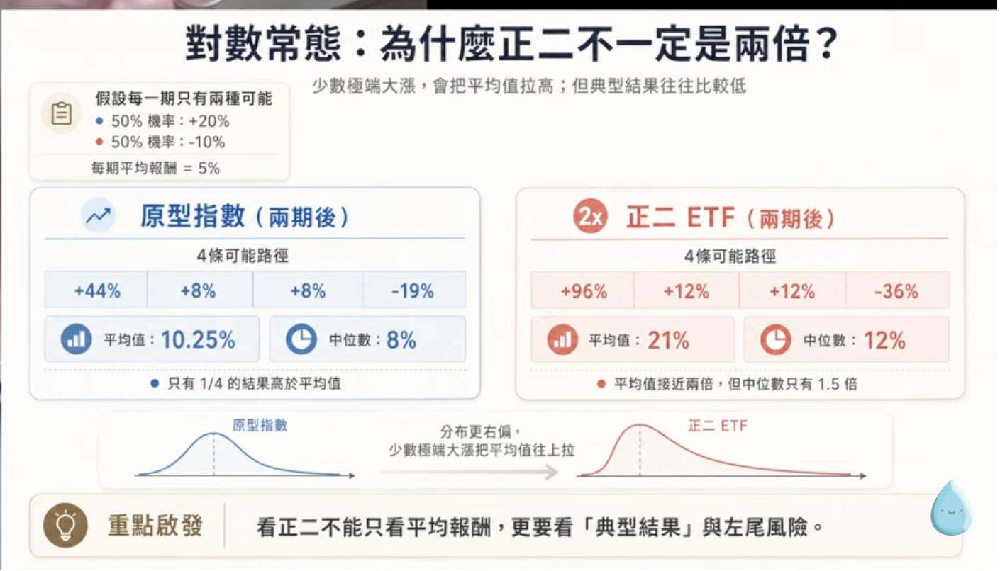
假設每期只有兩種結果：一半機率漲 20%、一半機率跌 10%（平均報酬 = (20−10)/2 = +5%）。很多人直覺以為兩天賺 10%，但投資是複利、不是相加。兩天後有四條路徑：
- 連漲兩天：1.2 × 1.2 − 1 = +44%
- 先漲後跌 / 先跌後漲：1.2 × 0.9 − 1 = +8%（兩條）
- 連跌兩天：0.9 × 0.9 − 1 = −19%
四條平均 = +10.25%，但中位數只有 +8%，而且四分之三（75%）的情況都低於平均值。
「平均值會被少數非常好的極端結果往上拉。大多數投資人得到的實際財富，很可能是低於平均值的，比較接近中位數（8%）。」— 直播講者
換成正2，右偏更嚴重：四條路徑變成 +96%、+12%、+12%、−36%。平均 +21%（≈原型 10.25% 的兩倍），但中位數只有 +12%（≈原型 8% 的 1.5 倍）。
6-2 原始論文的模擬結果（Trainor 教授架構）
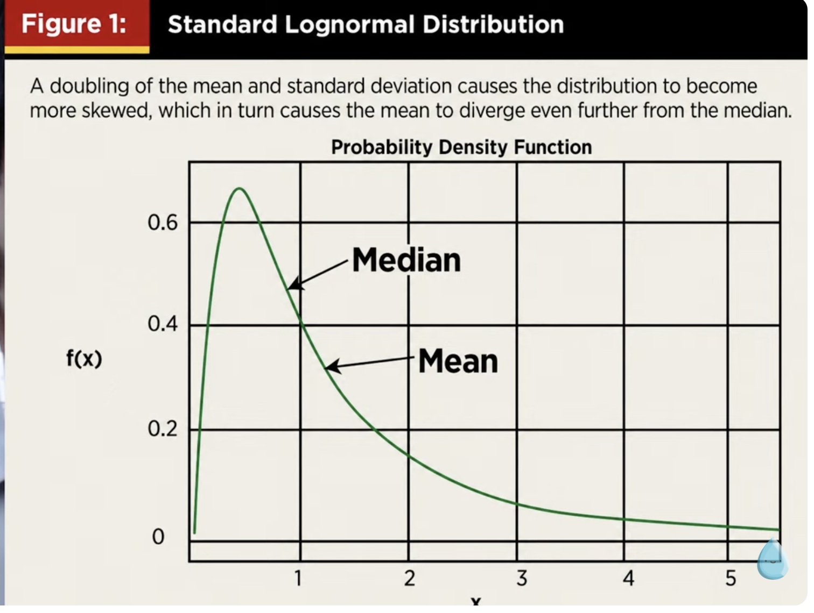
講者引用一篇早期奠基性的蒙地卡羅研究。參數設定貼近美股過去百年：每日算術平均報酬 0.04%、每日波動 1.1%、管理費 2%/年。結果：
| 期間 | 原型中位數 | 正2 中位數 | 比率 |
|---|---|---|---|
| 1 年 | 9.1% | 12.9% | ~1.4× |
| 10 年 | 8.98% | 約 12.6% | ~1.4× |
中位數看起來還好（1.4 倍）。但講者要大家看尾端（95% 上下界，Lower / Upper CL）——這裡才是魔鬼：
| 10 年尾端 | 原型 | 正2 | 放大倍數 |
|---|---|---|---|
| 下界 Lower CL（差的尾端） | −2.4% | −9.7% | 4.04 倍 |
| 上界 Upper CL（好的尾端） | 14.4% | 33.4% | 2.32 倍 |
「這個 4 倍跟 2.3 倍是不對稱的。所以正2 不是很多人講的『小賠大賺』，從模擬分布來看更傾向於大賠大賺——而且不利尾端的放大（4 倍）甚至高於有利尾端（2.3 倍）。因為你虧最多就是跌到零，賺卻沒有上限，所以左邊擠得比較高、右邊拉得比較長。」— 直播講者
6-3 把 00631L 放進模型 → 第 98.5 百分位（全場高潮）
講者重跑了 10 萬次模擬（把管理費從 2% 改成貼近台股的 1%，其他參數不變），先畫出十萬條路徑，看到明顯的右偏（灰色線擠在下面、少數往上拉長）。
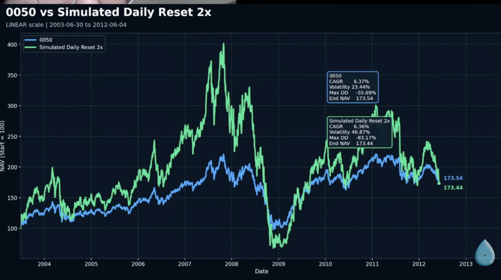
然後，他把 00631L 過去 10 年（2,500 個交易日、100 萬 → 約 3,800 萬）的真實走勢（黑線）放進這個模型，排出它的百分位：
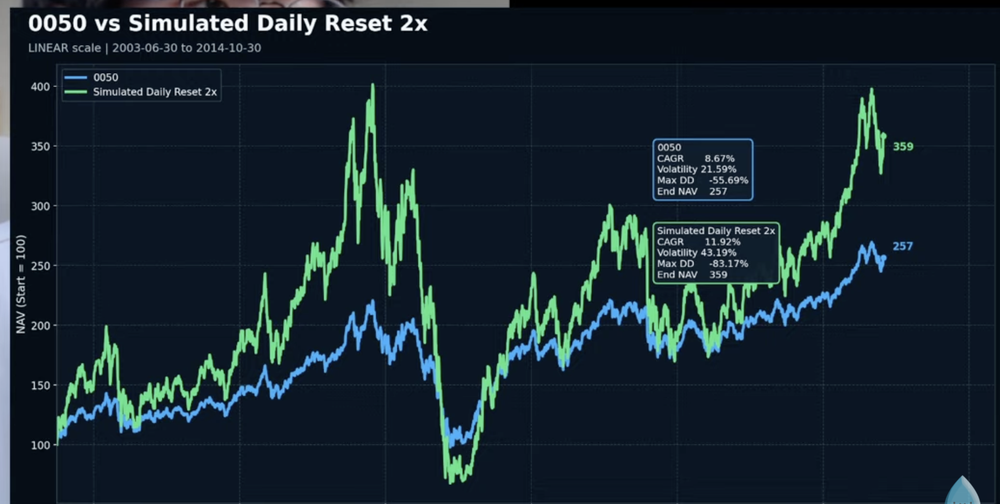
結果：第 98.5 百分位。
「也就是說，約 98.5% 的模擬結果，最終都低於過去 10 年 00631L 的真實走勢；只有最右尾約 1.5% 的結果能達到或超過它。所以從這個長期基準來看，00631L 過去這段歷史，已經落在非常靠近右尾、最極端的位置。它不是一個理所當然的常態結果，而是一段非常極端、非常強、非常順風、非常罕見的歷史。」— 直播講者
而且，講者強調這個模型其實「偏袒」正2：它用的是美股過去百年參數——而美股本身被很多學者認為帶有「國家層面的倖存者偏誤」（美國是最成功的市場之一）。
「如果我把 00631L 套到全球市場的報酬分布，它的百分位可能直接衝到 99.9。所以我用美股當基準，其實是對正2 更寬鬆、更有利的做法——結果它還是落在 98.5。這就突顯了台股過去十年這段歷史有多不尋常。」— 直播講者
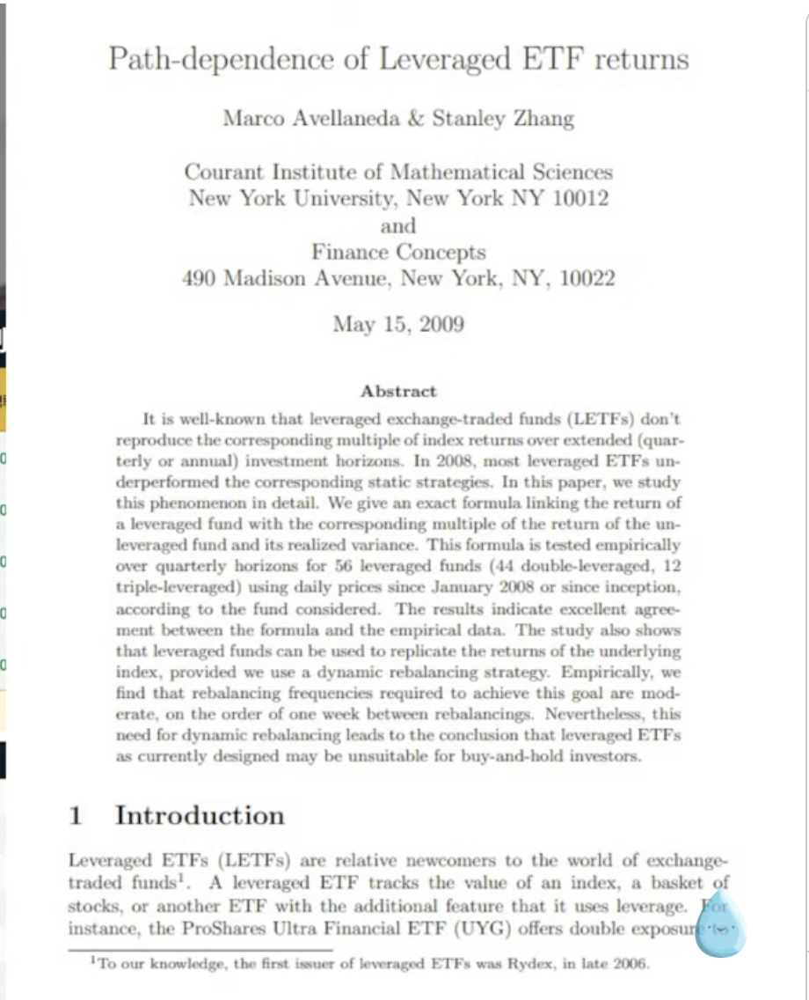
「我們最不該做的，就是把這條黑線外推到未來。如果你把這個極端右尾的結果，當成一個中性的預期、以為它是中位數，那你就會嚴重低估風險。可能發生（很小的機率）跟基本預期，是兩件完全不同的事。」— 直播講者
07 逆價差：正在消失的隱形紅利
講者誠實提醒：以上所有模擬都沒有計入正2 的融資成本、追蹤誤差、以及期貨的正/逆價差（只假設管理費 1%）。而台指期近年的價差環境，對正2 正在變差。他用三張圖說明。
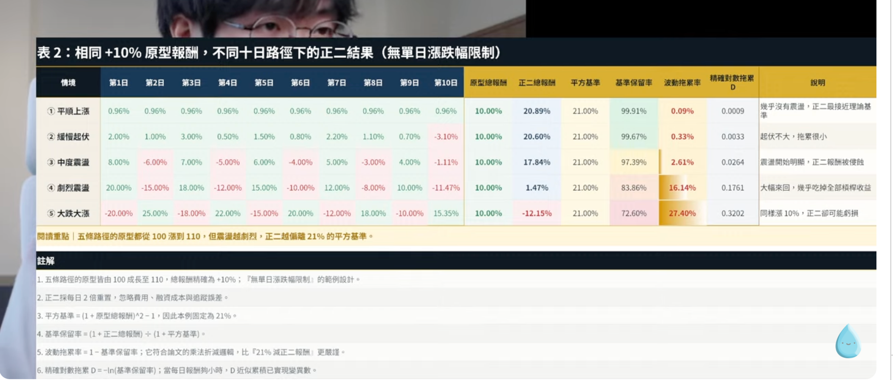
「2004 年之後很長一段時間，台指期大多是逆價差（綠柱），所以正2 在轉倉時很容易『補血』。但這個逆價差在近幾年明顯變弱，特別是最近一兩年，明顯變成正價差、扣血的環境。」— 直播講者
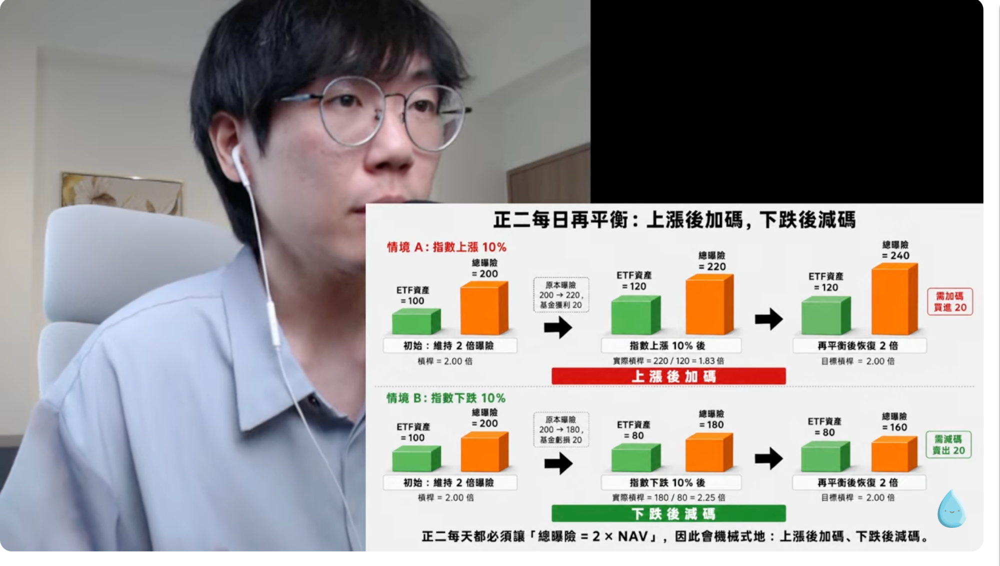
圖 15 顯示：2009–2011 年「補血」非常明顯（甚至雙位數），但 2023 年後開始轉弱，最新值約 −4.9%（近一年期貨連續轉倉策略落後大盤報酬指數約 4.9%）。
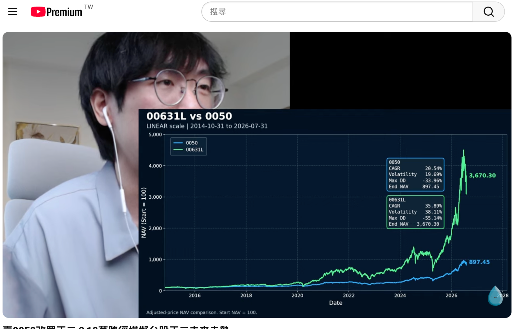
「長期來看，台指期的市場結構整體是偏逆價差、有幫助到多方（累積 +22.96%）。可是最近幾年開始回吐，曲線從高點慢慢往下掉。所以逆價差你也不要把它當作常態——不要以為過去十多年一直逆價差，將來也會一直幫正2 補血。」— 直播講者
08 講者結論：三個該問自己的問題
講者強調他對正2 是中性立場（跟他 2022 年講槓桿 ETF 的影片一致）。正2 是「用更高風險 + 路徑相依的不確定性，換取更高預期報酬」的工具，相比一般借貸（信貸/房貸/融資），它多了一個「路徑相依」的不確定因子。用之前，先誠實問自己三個問題：
- 沒有正2，我原本的財務目標（退休、買房）能不能達成？
若靠正常儲蓄 + 提高收入 + 長期投資本來就高機率達成，那正2 對你就不是必要，只是一種選擇。 - 我用正2 換到了什麼？
換到更高的預期報酬，但同時換到更大的路徑不確定性 + 短期波動風險。 - 我是真的『需要』槓桿，還是我『喜歡』槓桿帶給我的感覺？
刺激、不確定性、更快致富、以小博大、賭一波——講者說這是「最值得誠實面對自己的地方」。「很多人買正2 是最近幾年因為 FOMO 情緒去買的，這樣我就不太推薦。」
「我觀察那種真正長期持有正2 五年以上的，他們都蠻低調的。我 2022 年就潛伏在正二教社了，那時候熱度很低、貼文讚不到 100；可是今年去看，點閱、留言都很誇張。」— 直播講者
09 【我的總結】對「你」的意義
這場直播，等於一位嚴謹的獨立專家，把我這幾天跟你講的東西用數據證明了一遍：
- 「存正2 賺翻」= 倖存者偏誤 + 友善市場：過去 10 年是第 98.5 百分位的極端順風，不是常態。別外推。
- 正2 最怕盤整 / 長期報酬普通：圖 C 證明，可能承擔 2 倍風險（-83%）卻只拿到跟 0050 一樣的報酬。
- 看中位數，不是平均數：平均被少數極端贏家拉高，多數人拿到較差的中位數。
- 逆價差紅利正在消失：近年轉正價差扣血（-4.9%），成本變高。
- 「這兩年很多人」正是警訊：講者親口說，火氣爆炸的都是去年今年才買的 FOMO 客。
對你這個「怕套牢、長期、半導體超重」的人：
- 正2 最大跌幅可達 -83%（要很多年才回本）→ 你連聯發科 -16% 都焦慮，根本抱不住。
- 它是「台灣 50 × 2 倍槓桿」→ 把你最大的集中風險（台積電 / 台灣）再放大兩倍。
- 講者的三個問題，你的答案都很清楚：你靠「每月 4 萬 + 全球分散 + 8% 報酬」本來就能在 45 歲存到 1,000 萬——正2 對你不是必要，而且風險完全不符你的個性。
結論：0050 正2 是給「懂原理、能扛 -80%、單邊多頭信仰者」的工具，不是你的路。你的路是無槓桿、全球分散、慢慢滾複利。🌳